- 00 开篇词 如何成为金融级人才？.md.html
- 01 业务初探：扫了二维码之后发生了什么？.md.html
- 02 原理解读：如何理解第三方支付的业务逻辑和系统组件？.md.html
- 03 产品大观：不同金融业务都有哪些技术实现要点？.md.html
- 04 领域驱动设计（上）：如何设计金融软件顶层架构？.md.html
- 05 领域驱动设计（下）：如何设计统一的金融业务模型？.md.html
- 06 计算输入的正确性：怎么选择正确时间的数据？.md.html
- 07 计算过程的正确性：如何设计正确的数据处理架构？.md.html
- 08 计算结果的正确性：怎么保证计算结果是正确的？.md.html
- 09 数据传输的质量：金融业务对数据传输有什么要求？.md.html
- 10 数据存储的合理性：金融业务可以不用关系型数据库吗？.md.html
- 11 系统优化：如何让金融系统运行得更快？.md.html
- 12 正确性分级（上）：单机无备份有哪几种不同的一致性？.md.html
- 13 正确性分级（中）：多机无容灾有哪几种不同的一致性实现？.md.html
- 14 正确性分级（下）：多机有容灾有哪几种不同的一致性？.md.html
- 15 分布式正确性的存在性（上）：什么情况下不存在分布式共识算法？.md.html
- 16 分布式一致性（下）：怎么理解最简单的分布式一致性算法？.md.html
- 17 正确性案例（上）：如何实现分布式的事件溯源架构？.md.html
- 18 正确性案例（中）：常见分布式数据方案的设计原理是什么？.md.html
- 19 正确性案例（下）：如何在运行时进行数据系统的动态分库？.md.html
- 20 容灾（上）如何实现正确的跨机房实时容灾？.md.html
- 21 容灾（下）：如何通过混沌工程提高系统稳定性？.md.html
- 春节策划第1期 分布式金融系统知识，你掌握了多少？.md.html
- 春节策划第2期 读书如抽丝，为你推荐一些我读过的好书.md.html
- 春节策划第3期 如何运用架构知识解读春运买票和手游案例？.md.html
- 答疑集锦（一） 思考题解析与外汇架构知识拓展.md.html
- 答疑集锦（三） 思考题解析与数据库底层实现.md.html
- 答疑集锦（二） 思考题解析与账务系统优化.md.html
- 结束语 金融之道，与你同行，虽远尤欣.md.html
- 捐赠
14 正确性分级（下）：多机有容灾有哪几种不同的一致性？
你好，我是任杰。这一讲我想和你聊一聊，在多机有容灾的情况下怎么保证一致性。
在前面两节课里，我们已经学习了在没有容灾的情况下，如何在单机和多机的情况下保证数据一致性。由于没有容灾，每一份数据只会出现在一个地方，因此我们可以集中对所有数据访问进行控制。
但是，我们在搭建架构的时候一定会对数据进行容灾，会将数据复制到多个地方，这时候就会出现数据访问不一致的问题。
这种情况下前面两节课的内容就不适用了，我们需要用新的理论来分析所有会出现的问题。首先让我们来看一下我们“看起来熟悉”的CAP的理论。
为什么不要用CAP来描述一致性的选择？
CAP由三个性质组成：一致性（Consistency）、可用性（Availability）、分区容错性（Partition tolerance）。其中，分区容错性指的是网络出现了问题，把原本通过网络连接在一起的机器分成了几个独立的部分，也叫作脑裂。
首先我来说说CAP第一个容易让人误解的问题。我们会觉得CAP这三个性质不能同时拥有，最多只能有两个，那么三选二之后，排列组合一共有三种选择，分别是CA、CP和AP，其实这个理解是错误的。
CAP真正的假设是当出现了脑裂后，你只能在一致性和可用性当中选择一个，从而放弃另一个。也就是说你只能选择CP或者AP。在一些早期的文章中你还能看到这个常见的错误。所以CAP并不是像下面这幅图左边展示的三选二，而是像右边展示的那样二选一：
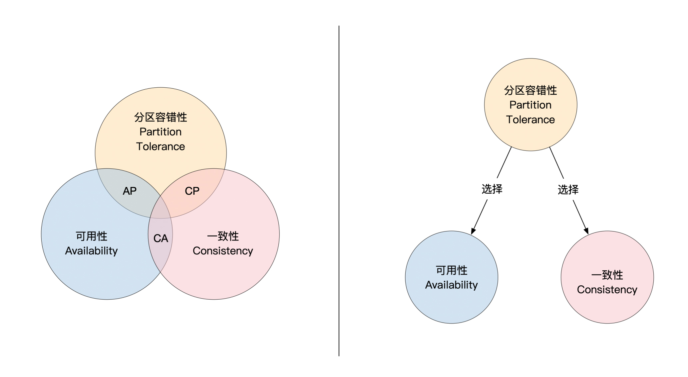
对于CAP，我们还有另一个常见的误解。通常我在介绍名词的时候都会先给个定义，但是对于CAP却没有。那你知道一致性的具体定义是什么吗？
我们一般对一致性都有一个模糊的认识，知道一致性描述了一个正确的数据读写场景，但是很少有人能说清楚，具体怎样才算是正确呢？我们会在这节课的后面告诉你，其实CAP的一致性指的是可线性化（Linearizability）。这就是CAP的第二个问题，定义不明确，容易产生误解。
CAP理论在出现之后，很快就变成了分布式系统一个脍炙人口的术语。但是因为CAP会带来一些误解，慢慢地在学术界已经不太建议用这个术语了。
在反对的声音当中，对于CAP三选二的误解争论不大，原因是这个误解比较容易澄清。现在反对比较强烈的是CAP对一致性的定义太过于简单。
因为分布式环境不但有一致和不一致，中间还有很大的选择空间。CAP将多种不一致选择变成了单一的选择，非常不利于我们清晰描述分布式环境下会出现的问题。所以你可以用CAP来给第一次学习分布式理论的人启蒙，但是在真正做架构设计的时候要尽量少用。
接下来，我们来看看分布式环境下的一致性分类。已经总结出来的一致性有好几十种分类，在这里，我们重点学习一些常见和重要的一致性。
最终一致性
我们在第2节课讲支付系统的时候提到过，支付系统会碰到信息流和资金流不一致的情况，因此需要用到异步系统对接的方式，最终信息流会和资金流一致。这里有一个关键的术语是最终一致性。
最终一致性是分布式系统中一个常见的一致性级别。基于消息系统的架构在宣传自己正确性的时候，一般会声明自己是最终一致的。
顾名思义，最终一致性指的是最终会一致。那问题又来了，什么叫最终，什么又叫一致呢？
为了说明一致性，我们要先弄明白什么叫作可见性（Visible）。假设有两台机器A和B，这两台机器之间互相做备份。
如果你在机器A上对数据的修改，经过一段时间之后反映在了机器B上，这时候你的修改在机器B上就是可见的。一旦在机器B上是可见的之后，你就可以在机器B上使用在机器A上的修改结果。下面这幅图展示了可见性的意义：
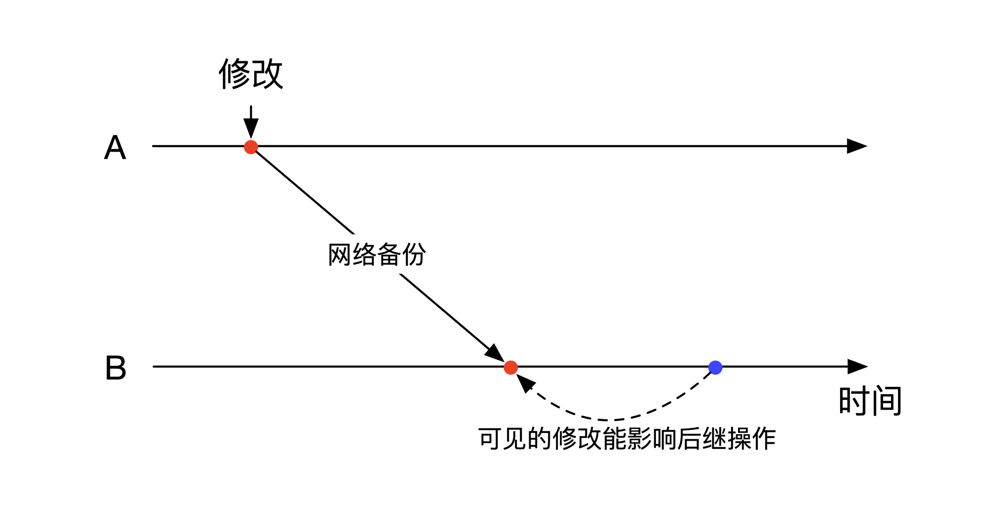
我们再回到对最终一致性的定义。这里的一致性指的是你的修改在所有机器上都是可见的。如果你的修改在一台机器上被看到了，那么这台机器就和原始的机器是一致的。
“最终”则定义了一致性的时间范围。它用到了数学上的极限（∞）概念。在有容灾的情况下，你对一台机器的数据修改会被慢慢复制到其他的机器。随着时间的推移，没有复制到数据的机器数目会越来越少。当这个时间是无穷大的时候，没有复制到数据的机器数目会降为零。
跟CAP没有对一致性做出准确的分类一样，最终一致性对于最终的定义也没有提出准确的、工程可用的定义，所以它的实际指导意义也不大。
从会话角度看一致性分类
接下来的4个一致性都和会话（Session）有关。会话是个使用者的概念，而不是服务器端的概念。会话是用户的唯一标识符，通过会话可以判断是不是同一个用户。
在单机或者没有容灾的情况下，能不能判断出是同一个用户的作用不大。但是在有容灾的情况下，多台功能一样的机器会作为彼此的备份节点。这时候同一个用户的不同请求可能会被发送到不同的机器上处理。虽然这时候是多台机器在处理你的请求，但是从用户的角度来看，你需要保证最后的处理结果，和在一台机器上处理的结果是一样的。
这里的一样并不要求完全一样，因此也会有一些选择的余地，这就是为什么我们会有4个不同的和会话相关的一致性。为了你理解起来更方便，在正式讲解之前，我们先来看看简化版的容灾模型。
在简化版的容灾模型里，用户会往集群的主节点写入数据。主节点负责将数据复制到备份节点。在这里对于复制的同步和异步没有任何要求，对于复制节点的个数也没有要求，只要多于一个备份节点就行。
用户的读取请求比较复杂。用户既可以从主节点上读取数据，也可以选择从备份节点读取数据，也可以有时候从主节点读，有时候从备份节点读。读取哪个节点取决于用户和服务器之间的协议，也可能有一定的偶然因素。
下面这幅图展示了一个同步备份的例子。用户把数据写到主节点后，并不会直接返回，主节点会将数据同步写入两个容灾节点。只有这两个容灾节点都写入成功之后，主节点才会通知用户说数据已经写入成功。
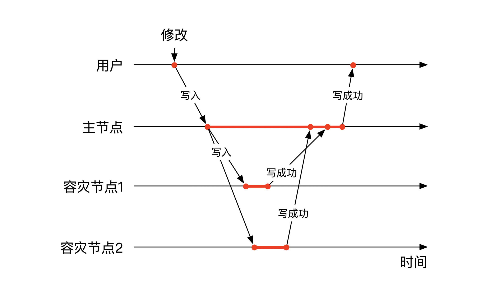
在定义了会话和容灾之后，让我们来看看都有哪四种不同的会话一致性分类吧。
单调写一致
单调写一致的英文名是Monotonic Write。如果你往有容灾的集群里写了多次数据，单调写一致要求所有的节点的写入顺序和你的写入顺序完全一致。这样我们就能保证对于任何一个节点，它看到的别人的写操作和自己的写操作是完全一致的。
我给你举个例子，下面这幅图展示了一个不是单调写一致的情况。用户有连续三个写操作。主节点的写入顺序和用户发起的写操作顺序一致。但是主节点在复制数据到容灾节点1的时候，前面两个写操作顺序发生了错位，因此整个集群不满足单调写一致。
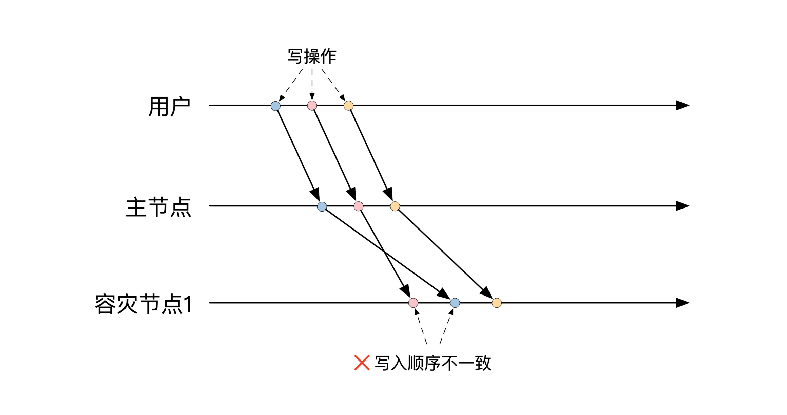
单调读一致
和单调写一致对应的是单调读一致，英文名是Monotonic Read。你要注意的是，单调读一致并不表示所有机器上的读顺序都是一致的。单调读一致依然和写的顺序有关。它要求新的读操作不能读到老的结果。比如说，你如果从集群里读到了一个值，那么如果你再读一次的话，一定不能读到之前的值。
单调读不一致的情况一般发生在读取的节点发生变化的时候。如果你的两次读发生在两个不同的备份节点，那么由于备份的速度不同，很有可能你的后一次读取会读到更早一些的结果。
下面这幅图展示了单调读不一致的例子。用户写入两个值之后读取了两次结果。第一次读的时候是从主节点上读的，因此读的是最新的写入结果。
第二次读发生在容灾节点1上面。由于主节点将数据备份到容灾节点1需要很长的时间，第二次读的操作发生的时候，容灾节点还没有最新的数据，因此第二次读返回了第一次写入的数据，这样就违反了单调读一致的要求。
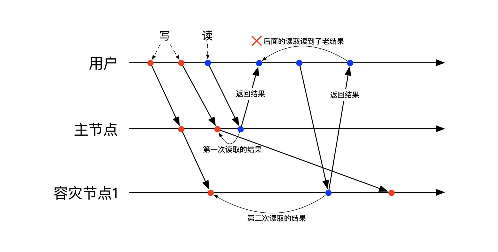
自读自写
自读自写的英文名是Read Your Write，也就是说你能把自己写入的值读回来。它不仅仅要求能把写入的值读回来，还要求能把所有过去写入的值读回来。
为了能保证自读自写的一致性要求，服务器的节点在处理你读请求的时候，需要确保自己节点上有这个会话过去所有的写入记录。这样你才能确定所有写入的结果都没有丢失，而且在读的时候前面的写入都已经完成了。
注意，所有写入都已经完成并不表示写入的顺序是正确的，因此如果你想要得到正确的写入结果，还需要单调写一致来保证。
下面这张图里展示了一个不符合自读自写一致性的例子。用户在连续写入两个值后进行了读取操作。读操作发生在容灾节点1上。由于主节点到容灾节点1的备份速度过慢，容灾节点1在处理读请求的时候，还没有收到第二个写请求，因为读取结果漏掉了一个写入的结果，所以不是自读自写。
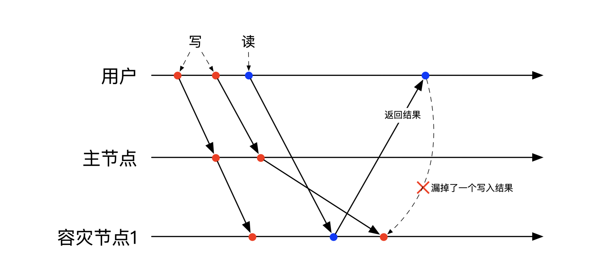
先读后写
先读后写的英文名是Write follow Reads。前面三个一致性规定了一个会话的行为应该是怎样的。先读后写不同，它规定了多个会话之间互动应该满足怎样的一致性要求。
先读后写要求比较严格。假如你曾经读到了另一个人写入的结果，那么你想再写数据的话，你的写入一定要在另一个人的写入之后发生。也就是说，你们俩之间的写入有个先后顺序。
你如果看到了另一个人的结果，就表示另一个人的写入是过去发生的事情，这时候如果你想再写点新东西进去，那么整个集群需要保证你们俩写入的先后顺序。
下面这个例子展示了一种不是先读后写的情况。这个例子里有两个用户和两个节点。
用户1向主节点写入了第一个数据，接下来用户2马上从主节点读到了这个写入的数据，然后又立刻写了一个新的数据。由于主节点复制第一个数据到容灾节点1的速度太慢，导致容灾节点1先保存了后一个写入的数据，然后才保存前一个写入的数据，因此不是先读后写。
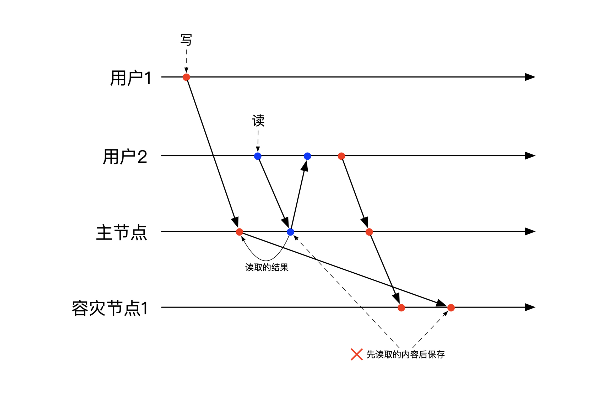
线性一致性
线性一致性的英文名是Linearizability。线性一致性是分布式系统里最重要的一致性。你可以理解为线性一致性是分布式环境下的可串行化（Serializability）。
线性一致性所定义的环境里有一些程序，这些程序会执行一系列的操作，每个操作都有开始和结束的时间。
对于单个程序来说，它所有的操作之间没有时间上的重叠，也就是说属于同一个程序的两个操作不会并发执行。但是属于不同程序的操作可以在执行时间上有所重叠，比如说下面这幅图展示了3个程序一共6个操作的时序图：
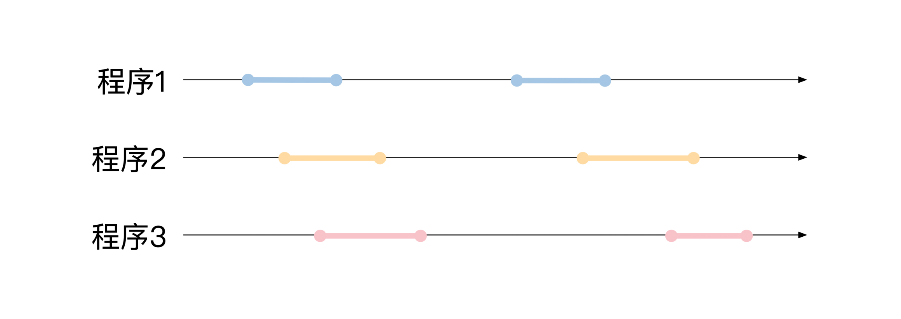
线性一致性要求我们可以调整这些程序的操作开始和结束时间，调整的结果是所有程序的所有操作之间没有任何时间上的重叠。
和我们在第12节课讲的冲突可串行化一样，线性一致性对时间的调整也有一个要求，那就是如果两个操作之间没有时间上的重叠，那么这两个操作之间的时间先后顺序不能发生改变。
下面这幅图展示了对前面例子的分析。前面的例子一共有3个地方有时间重叠，因此这些彼此重叠的操作可以随意调整先后顺序。例子里还有两个地方有操作的先后关系，因此在调整顺序的时候，我们不能把这几个有先后关系的操作顺序搞反。
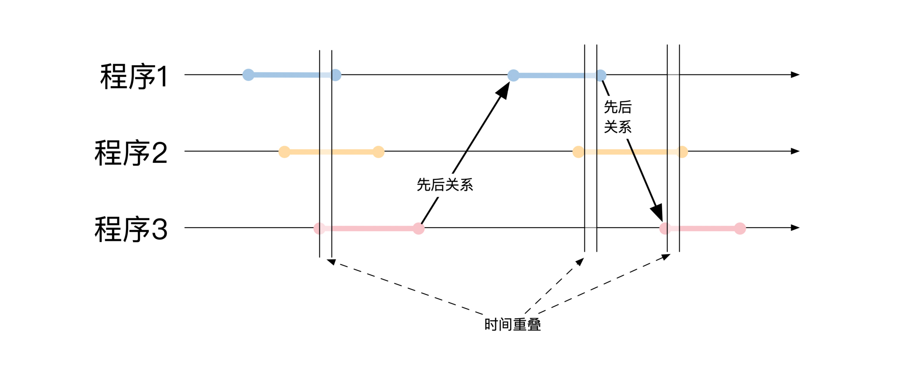
下面这幅图展示了一个可能的线性一致性调整结果：
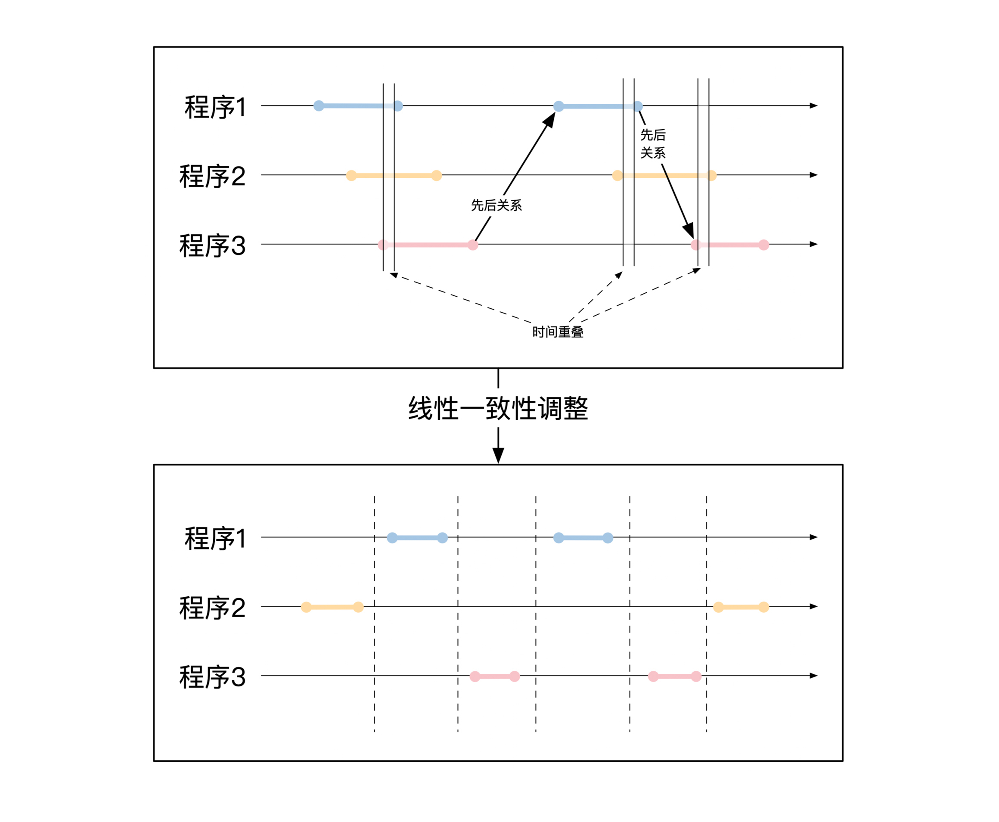
那调整之后就是线性一致性了吗？其实还不是。你还需要对调整之后的结果进行正确性验证。这里的正确性指的是业务逻辑的正确性。
当你把所有操作按照线性一致性的要求进行调整之后，所有操作可以看作是先后进行的，没有任何并发。所以，你可以按照业务逻辑来分析所有程序的所有操作是否合理，比如说加减钱是否正确，或者消息入栈出栈的顺序。
如果你发现逻辑不正确，就需要尝试另一种线性一致性调整的顺序。要是你尝试了所有调整的排列组合后，还是找不到一个正确的结果，那么整个过程就不是线性一致性了。
线性一致性是分布式环境下最重要的一致性。它在分布式环境下对所有操作进行了排序，因此能帮助我们分析最后结果的合理性。线性一致性的实现还需要用到接下来两节课的内容，你先有个印象就行。
严格可串行化
在第12节课我给你介绍了单机情况下最强的一致性是可串行化。而这节课我们又学了分布式情况下最重要的一致性是可线性化。那么把这两者结合起来，就得到了分布式情况下最强的一致性，叫作严格可串行化（Strict Serializability）。
我们再来重温一下可串行化的定义。可串行化表示两个事务里所有操作的执行结果等价于这两个事务的某一个顺序执行结果。这里对“某一个”并没有做任何限定。
而严格可串行化则对这个“某一个”做出了规定，它要求两个事务的运行结果等价于唯一一个顺序执行结果。在这个结果里，原来谁的事务先结束，那么在顺序执行的情况下谁的所有操作先结束。严格可串行化虽然有着极强的正确性保障，但是它的运行效率特别低，所以一般很少用到。
小结
这节课我们学习了在有多机容灾的情况下如何保证一致性。
首先我给你简单介绍了分布式系统中最常见的CAP理论。CAP能方便初学者理解，但是由于它容易被误解，而且对于分布式问题的复杂度有一个过于笼统的结论，建议你在真正讨论问题的时候尽量少用。
然后我们讲了最终一致性。异步处理架构一般具有最终一致性，但是最终一致性和CAP理论一样，没能对分布式环境下的复杂问题做更为准确的分析。
接着我们从会话的角度来看一致性，一共有单调写一致、单调读一致、自读自写和先读后写这4种一致性分类。这4类之间都是并列关系，没有高低强弱之分。
接下来我们了解了线性一致性。线性一致性是分布式系统中最重要的一致性级别。它对所有操作开始和结束时间进行合理的调整，最后的结果是所有操作能按顺序执行，这也是为什么叫作线性一致性的原因。
最后我们学习了严格可串行化。严格可串行化要求在分布式环境下的事务需要遵守线性一致性。由于它的执行效率低，一般很少使用。
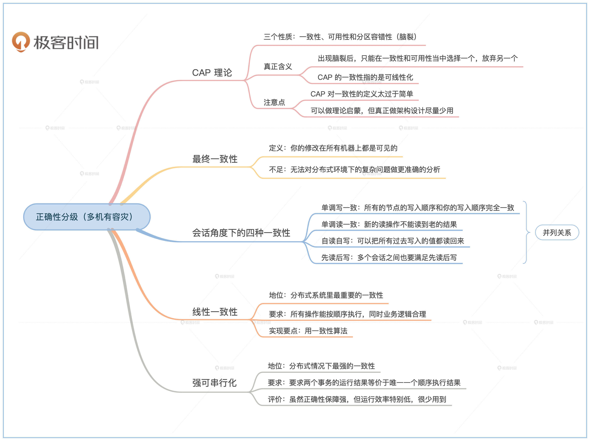
为了让你建立起更加系统、清晰的认知，这里我整体总结一下所有一致性的情况。
在第三个模块的前面三节课里，我给你介绍了单机、多机无备份和多机有备份这三种情况下对一致性的分类。很多情况下，我们并不是追究极端的一致性，而是根据我们的业务和经济情况来选择合适的一致性级别，这一点在你设计金融系统的时候尤为重要。
现在分布式数据解决方案众多，我们对这些技术宣传的内容一定不能盲从，而是要根据它们的实现做选择。当然了，一致性选择也不是完全没有规律可循。下面这幅图列出了我们前三节课大部分内容之间的层级关系和我们通常的选择。
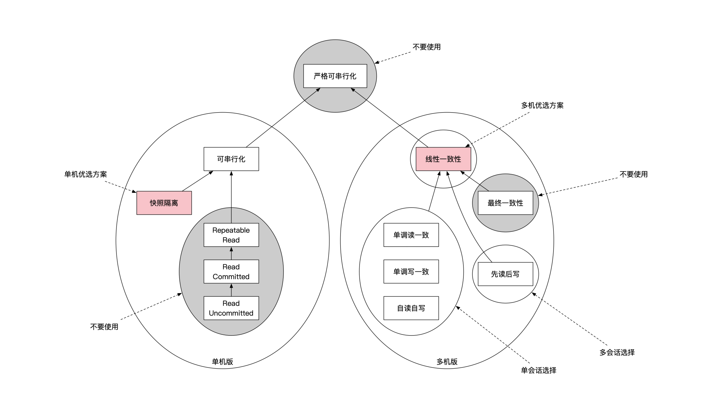
分析的思路是这样的。首先我们要看是单机问题还是多机问题。如果是单机问题，那么首选快照隔离，一般不需要用到可串行化。
如果是多机问题，那么先解决的是多机容灾。这时候有多台机器需要提供同一份数据，你可以根据容灾后的正确性要求具体判断。
一种情况是你对容灾后的正确性要求不高，这时就要看看从客户端角度发起的会话是否需要有正确性。
这里还可以细分成两种更详细的情况，如果你只需要保证一个会话的正确性，那么一致性要求就是保证单调读一致、单调写一致和自读自写。如果需要保证多个会话之间的正确性，就要保证先读后写。
另一种情况是对容灾之后的数据访问正确性要求高，那么就要保证线性一致性。
最后，如果你要解决的是在有容灾的情况下的分库分表问题，就需要解决分布式事务。这时候，每个分完的库和它的容灾机器组成的集群需要先满足线性一致性，这样容灾集群对外才能表现得像单个节点一样。然后我们再用TCC或者2PL来实现分布式事务。
思考题
我们这节课的思考题很简单。如果让你来实现分布式环境下的严格可串行化，你能想到什么办法呢？
欢迎你在留言区提出你的思考或疑问。如果你身边的朋友、同事也对一致性的话题感兴趣，也欢迎你转发给他们，一起学习进步。
© 2019 - 2023 Liangliang Lee. Powered by gin and hexo-theme-book.